日期时间(date)
回忆
- 上次研究了date日期
- 用各种方式显示日期时间
- 每个文件都有三个时间元数据
- access 上次读取时间
- change 上次状态变化时间
- modify 上次写文件时间
- 我们这次都研究时间日期
- 可以有个日历来看看吗？
cal
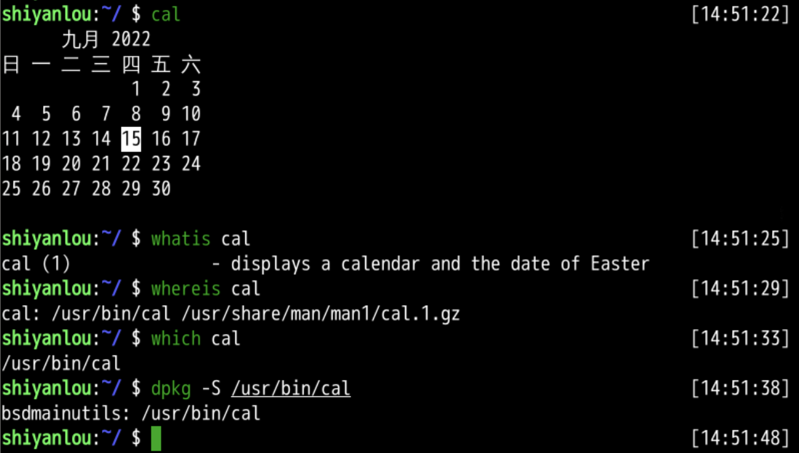
显示年历
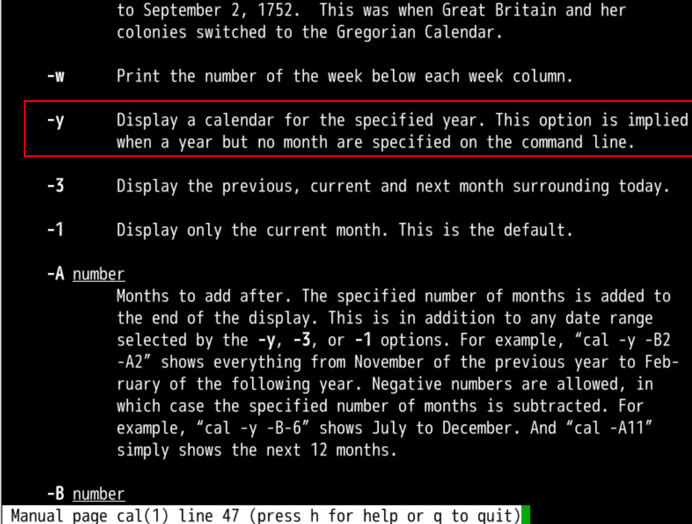
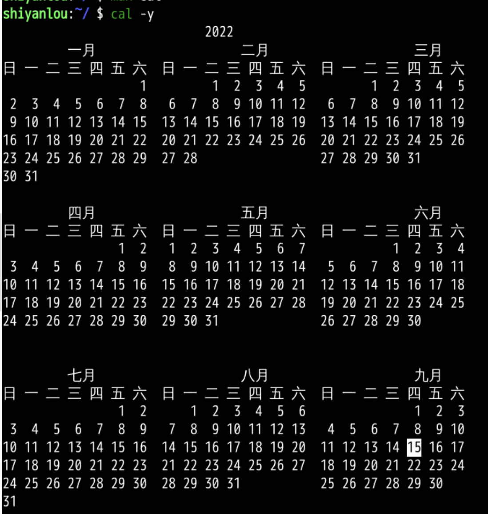
显示某年
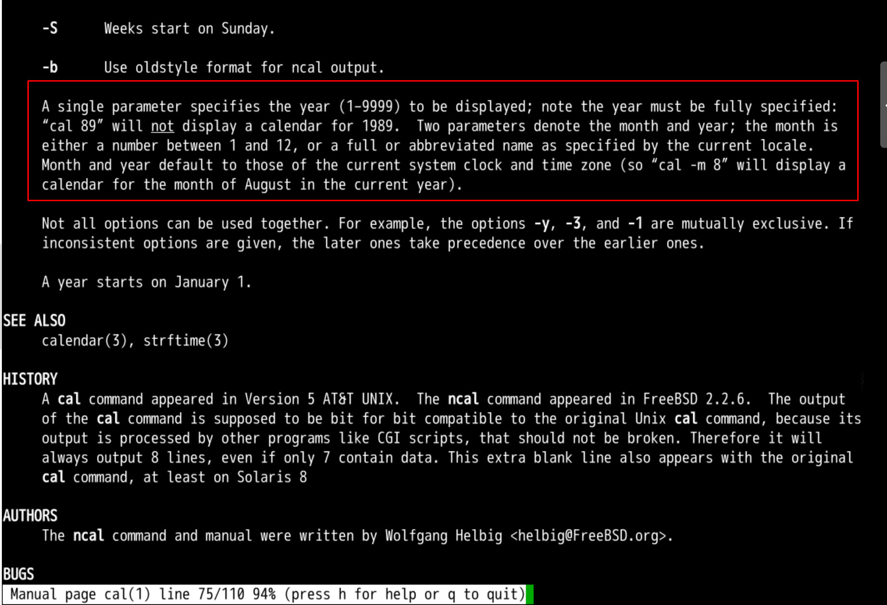
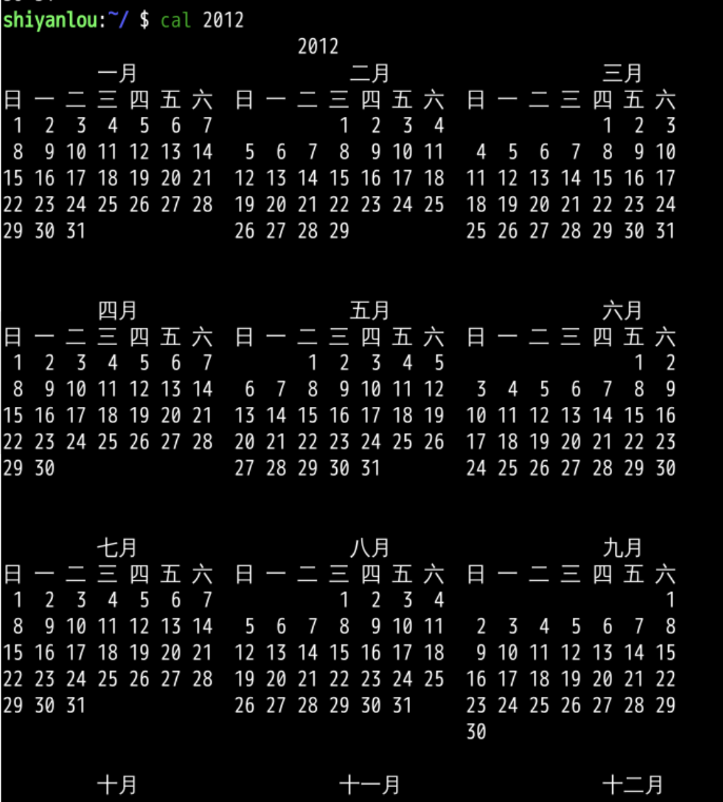
以某天为核心
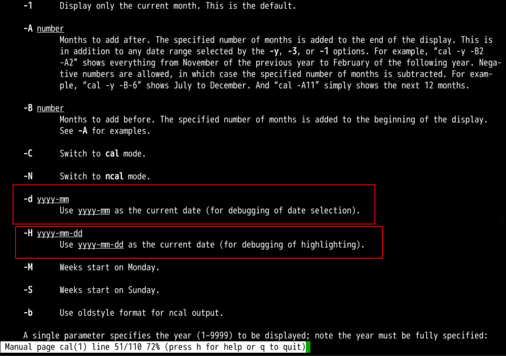
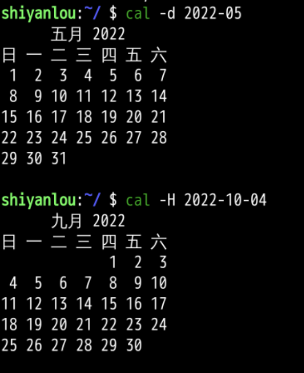
前后月份
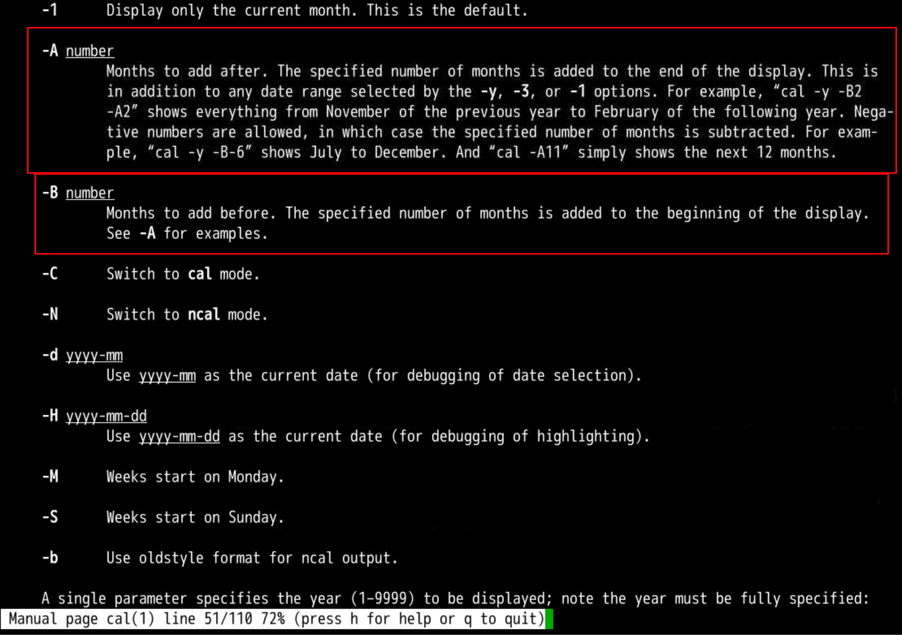
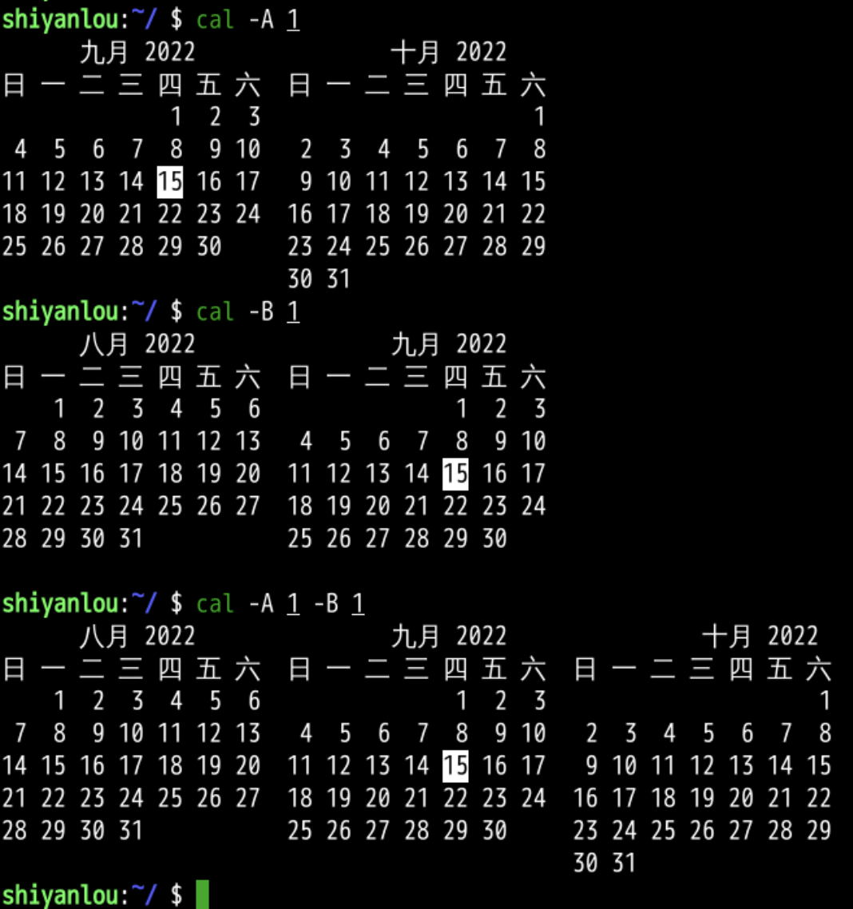
竖版日历
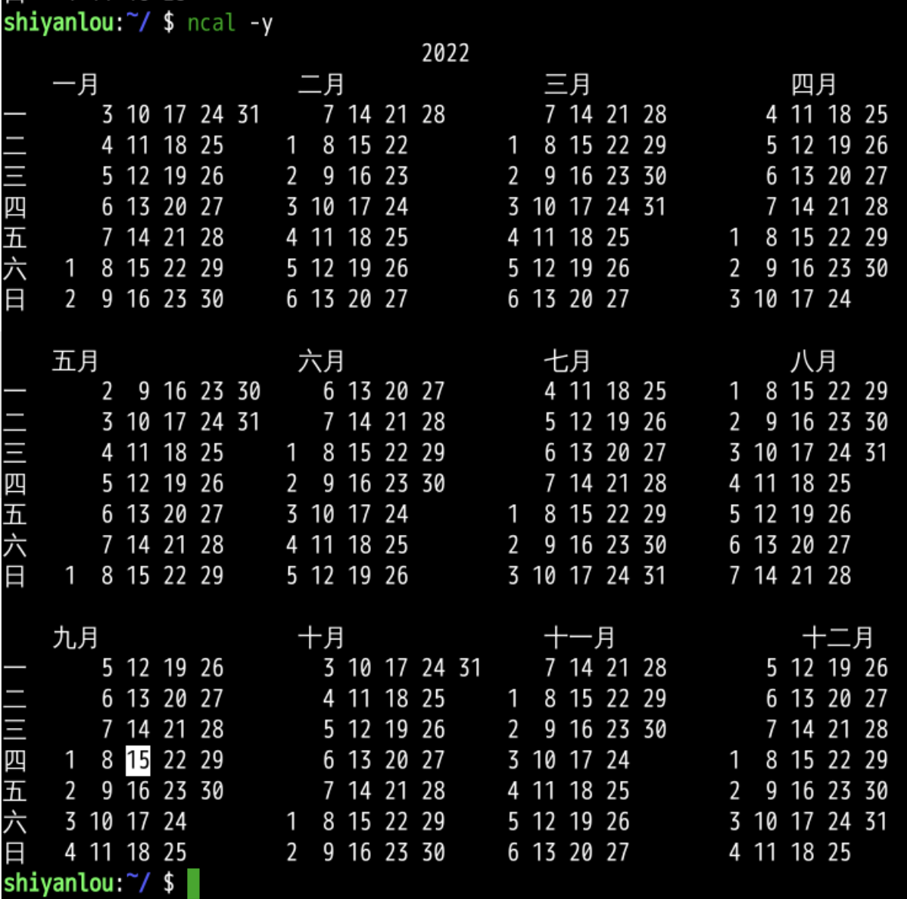
日历历史
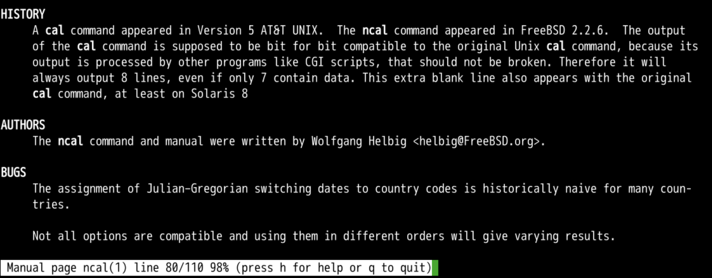
- cal程序来自于unix
- ncal来自于freebsd
- linux版本每一位都一点不差
- 因为输出结果还需要交给别的程序
- 即使只有7行数据
- 也要输出8行
- 多出的一行从solaris 8开始就成为惯例
- 看到了3个过去的传奇系统
总结
- 这次我们研究了日历
- 这个日历
- 可以显示一个月的
- 也可以显示前后几个月的
- 还可以显示某一年的
- 日历来自于unix
- 不过这里面没有阴历
- 就是初一十五那种东西
- 我们可以在终端里面显示阴历么？🤔
- 下次再说👋